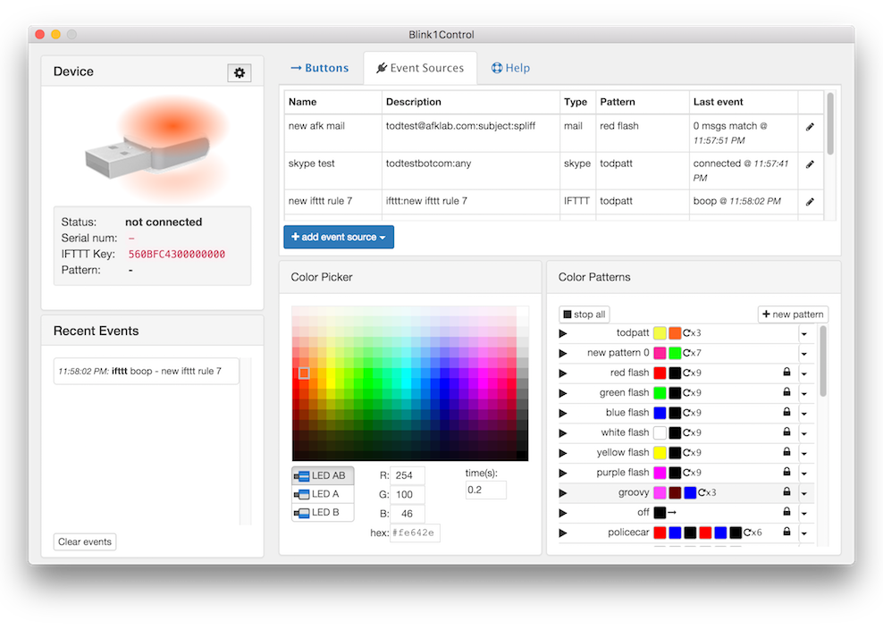

Blink1Control2 Manual
Blink1Control2 is a GUI application for hooking notification events to blink(1) devices. It is the primary user-level application for controlling blink(1). These events can be on your computer or on the Net, and these events trigger colors or color patterns to be played on the blink(1) device.

Blink1Control2 Features
- Full 24-bit control of both top and bottom RGB LEDs of blink(1) devices
- Control up to 8 different blink(1) devices
- Create custom “Big Buttons” to easily set Presence (Away/Busy/Meeting) or play favorite color patterns
- Event source notification system connects IFTTT, Mail, Skype and more to blink(1) color patterns
- Create and use on-the-fly “meta-pattern” color patterns in any event source
- Entirely open-source
In this Manual
- Overview
- Installation
- Device Information
- Status
- IFTTT Key
- Multiple blink(1) display
- Big Buttons
- Using buttons
- Making your own buttons
- Event Sources
- IFTTT
- File / Scripts / URLs
- Skype
- Color Picker
- Color Patterns
- Patterns in general
- Meta-patterns
- Editing patterns
- Recent Events
- Event Log
- Tray Menu
- Preferences
- Configuration File
- Quick Start
2. Overview
The blink(1) device is a small USB device with two independently-addressable RGB LEDs and a tiny computer that runs a color mixing and color pattern state machine.
While blink(1) requires no drivers (thanks to it being a HID-class USB device), it does need a program to control it. Blink1Control2 is the primary GUI-based program designed to be used with blink(1) devices. It acts as a conduit to blink(1), looking for events you tell it you want to be notified about and controlling the blink(1) hardware.
Blink1Control2 can natively receive events from:
- IFTTT channels (more than 300 and counting!)
- IMAP and GMAIL email services
- Skype status
- Files or URLs containing text or JSON data structs
- Executable programs or scripts that emit text or JSON data structs
Blink1Control2 uses these events to trigger colors or color patterns on the blink(1). Blink1Control2 can independently control both LEDs in a blink(1) device and multiple blink(1) devices are supported, allowing you to assign different events to different devices.
How Blink1Control works
Events trigger color patterns, color patterns change blink1
Event Source --> Color Pattern --> blink(1) changes color
3. Installation
3.1 Installing the blink(1) hardware
To install the blink(1) hardware, just plug in the blink(1) device into any open USB port. No driver installation required! On Windows, you will see it say “installing hardware” but it’s not actually doing anything.
3.2 Installing the Blink1Control2 software
The Blink1Control2 software comes as either a zip bundle for installation in any directory you want, or a DMG (Mac) or EXE (Windows) installer for system-wide installation.
4. Device Information
The Device Information panel in Blink1Control2 is the first area you should look at when running Blink1Control. It consists of a “virtual blink(1)” that mirrors the colors displayed on a real blink(1) if present and a status area that includes information about 

5. Big Buttons

When Blink1Control is started, you are most notably presented with a collection of big buttons that we call “Big Buttons”. These are in two groups: an upper set of demos & tools to play around with blink(1), and a lower set of customizable buttons that come pre-configured for common presence indications like “Away”, “Busy” or “Meeting”. These Big Buttons can be assigned any color or color pattern. Right-click on an existing button to edit its parameters.

6. Color Picker

The Blink1Control2 color picker lets you select colors via a color grid, a hex string text field, or a red/green/blue numbers. You can also pick which LED of the blink(1) to control (AB == both LEDs, A = top LED, B = bottom LED). When multiple blink(1) devices are plugged in, you can also select which blink(1) to address.
7. Color Patterns
8. Event Sources


Events sources in Blink1Control generate
To create a new event source, click the “add event source” button and you’ll be presented with the available event source types:

8.1. IFTTT
8.2. Email
8.3. URLs, Scripts and Files
8.4. Skype
8. Recent Events
The Recent Events panel shows a timestamped text view of events created by event sources. It also shows when Big Buttons are pressed. This can help with time tracking.

10. Tray Menu

11. Preferences
11. Configuration file
12. Quick Start: Using IFTTT with Blink1Control2
1.0 Plug blink(1) into computer
1.0 Start Blink1Control2. Note the “IFTTT Key” in the Device section
1.1. Log into IFTTT
1.2. Connect “blink(1)” channel on IFTTT using IFTTT key
1.3. Connect “Email” channel.
1.4.1 Click on “Create new Recipe”, search for and choose “Email”
1.4.2 Choose Send IFTT any email and click “Create Trigger”
1.4.3 Click “that” and search for and choose “blink(1)
1.4.4. Change rule name to “test me out” and click “Create Action”
1.4.5.